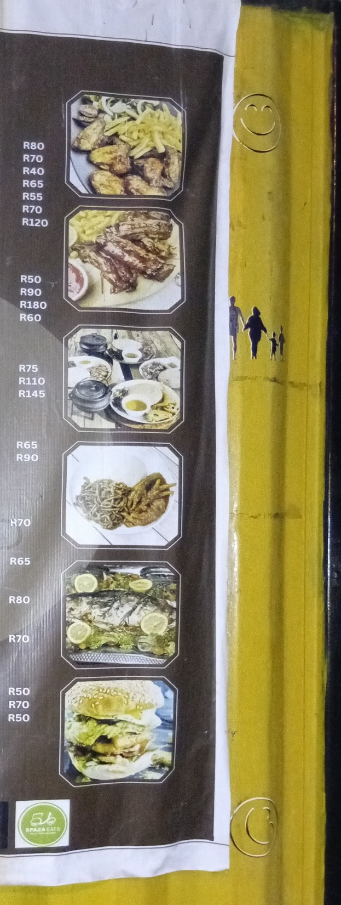
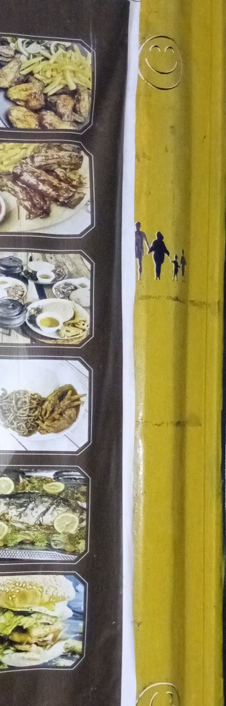

Our Business
Backyard Kitchen is a small local food business. The supplied menu shows a broad range of affordable meals, from kotas and burgers to grills, African cuisine, breakfast and drinks.
The website is designed to give customers a simple place to see what is available, check prices and find the contact details needed to place an order.
What We Offer
- Affordable kota meals.
- Burgers, Dagwood and pizzas.
- Chicken and beef wraps.
- Sandwiches and chilli cheese loaded fries.
- Grills, chicken, fish and African cuisine.
- Breakfast items, hot drinks and cold drinks.

Website Purpose
The purpose of the website is to improve online visibility, make the menu easier to access on a phone or computer, and make it easier for customers to contact Backyard Kitchen.
Simple and Accessible Design
This website primaraly uses HTML and images only. The pages use headings, lists, links, figures and semantic sections so that the structure remains clear and easy to maintain.
